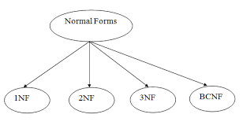

|
En este apartado, se muestran, a través de videos, dos ejercicios completos sobre el tema de normalización. El primer ejercicio, compuesto de un solo video, trata de una tabla de Centros Veterinarios. A través de dicho ejercicio se puede ver una tabla que está en 2NF pero no está en 3NF. El segundo ejercicio, compuesto de dos videos, trata de periodistas y los periódicos donde trabajan. En dicho ejercicio, se puede mirar una tabla que no está en 1NF, y como pasarla hasta 3NF y/o BCNF. |
 Fuente. https://medium.com/codex/normalization-in-database-management-systems-dbms-1nf-2nf-3nf-bcnf-cbf6dbc214cc |
Videos:
| Ejercicio Completo No. 1 | Ejercicio Completo No. 2 - Parte 1 | Ejercicio Completo No. 2 - Parte 2 |